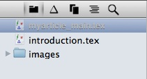
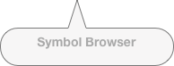

The Symbol Browser

TeXnicle inlcludes a comprehensive symbol browser so you can easily find the symbol you want. To view the symbol browser, select the symbol browser icon above the project tree:

You can also use the keyboard shortcut alt-cmd-2.
You will then see the symbol browser in place of the project tree:

To insert a symbol in to the document currently being edited, select the symbol you want then click the insert button. Alternatively, you can drag the symbol in to the text or just double click the symbol to insert it at the current cursor position.
